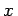
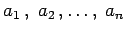
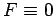
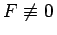

Inhalt Index DeskTop Bronstein

 Differentialgleichungen Gewöhnliche Differentialgleichungen Differentialgleichungen höherer Ordnung und Systeme von Differentialgleichungen Lineare Differentialgleichungen n-ter Ordnung
Differentialgleichungen Gewöhnliche Differentialgleichungen Differentialgleichungen höherer Ordnung und Systeme von Differentialgleichungen Lineare Differentialgleichungen n-ter Ordnung


Eine Differentialgleichung der Form
heißt lineare Differentialgleichung n-ter Ordnung. Dabei sind F und die ai Funktionen von , die in einem gewissen Intervall stetig sein sollen. Wenn die  konstant sind, spricht man von einer Differentialgleichung mit konstanten Koeffizienten. Eine homogene lineare Differentialgleichung zeichnet sich durch  aus, eine inhomogene durch .